Todo lo que necesitas para instalar la herramienta y usarla en tu día a día: encontrar clientes en EE. UU., llamarlos, hacer seguimiento y cerrar ventas.
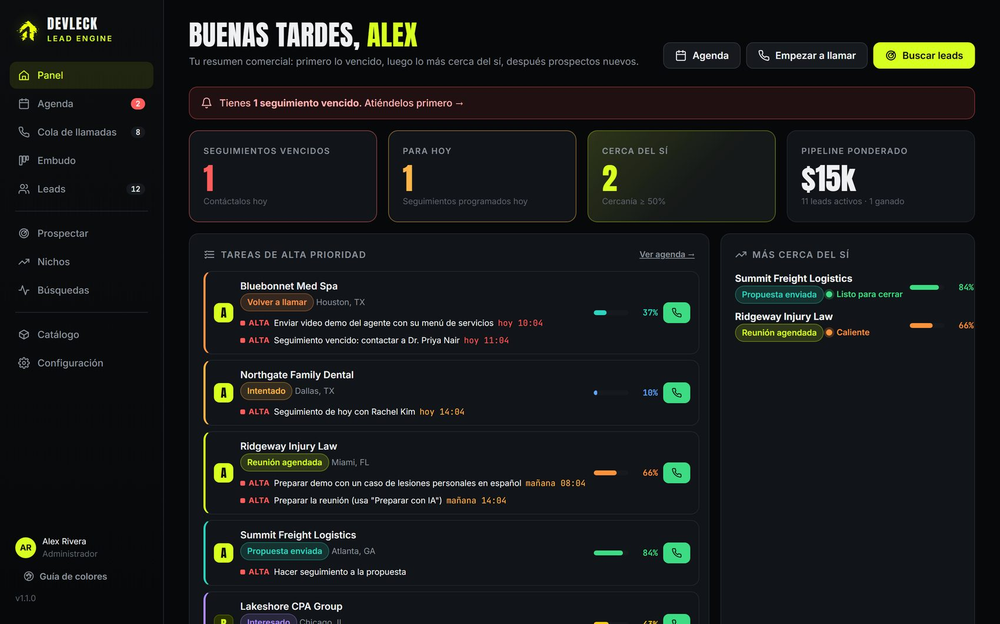
1 · Instalación15 minutos, una sola vez. Programas, sesión de Claude, descarga y perfil.
2 · TutorialCada pantalla paso a paso. Agenda, cola de llamadas, ficha del lead, embudo, prospección, nichos y catálogo.
3 · AyudaTu rutina diaria, la guía de colores, soluciones rápidas y reglas de oro.
Parte 1
Instalación paso a paso
Se hace una sola vez por computadora. Después solo abres la herramienta y empiezas a trabajar.
Antes de empezar necesitas
Una computadora
Windows, Mac o Linux, con internet.
Cuenta de Claude de pago
Plan Pro o Max: la herramienta investiga con tu propia cuenta.
Sin cuenta de GitHub
El repositorio es público: no tienes que registrarte en GitHub.
1
Instala 3 programas
Node.js (versión LTS) → nodejs.org
Git → git-scm.com/downloads
Claude Code: abre PowerShell (en Mac o Linux, la Terminal) y ejecuta:
npm install -g @anthropic-ai/claude-code
Importante: cuando termines, cierra la terminal y vuelve a abrirla.
2
Inicia sesión en Claude
En la terminal escribe el comando de abajo. Se abrirá el navegador para que entres con tu cuenta de Claude. Al terminar, escribe /exit.
claude
3
Descarga la herramienta
Ve a una carpeta que recuerdes (por ejemplo, Documentos) y ejecuta estos comandos, uno por uno:
git clone https://github.com/Kin9Zeus/Devleck-Lead-Engine.git cd Devleck-Lead-Engine npm run check
Qué debes ver: ✔ en Node, Claude Code, Git y Catálogo. La línea de "Trabajador" saldrá con ✘ hasta que completes el paso 5.
No uses "Download ZIP": si no descargas con git clone, no podrás recibir actualizaciones.
4
Abre la herramienta
Windows: doble clic en iniciar.bat, dentro de la carpeta Devleck-Lead-Engine.
Mac o Linux: en la terminal, ejecuta ./iniciar.sh
Se abre el navegador en http://localhost:4600. Deja abierta la ventana negra mientras uses la herramienta.
5
Configura tu perfil (solo la primera vez)
Ve a Configuración y completa quién eres, tu nombre, tu correo de trabajo, tu teléfono y tu territorio (los estados que te asignaron). Pulsa Guardar perfil. Tu nombre y tu correo se insertan solos en los guiones y correos.
Parte 2
Cómo usar la herramienta
Un recorrido por cada pantalla, en el orden en que la vas a usar durante el día.
El menú de la izquierda
Sección
Para qué la usas
Panel
Resumen del día: seguimientos vencidos, tareas urgentes, los negocios más cerca del sí y a quién llamar ahora.
Agenda2
Seguimientos y tareas por urgencia. El número rojo indica cuántos tienes vencidos o para hoy.
Cola de llamadas
La lista para llamar uno tras otro, en el mejor orden posible.
Embudo
Tablero con todas tus oportunidades por etapa. Arrastra las tarjetas para moverlas.
Leads
Tu base completa, separada en listas por etapa, con filtros, búsqueda y exportación.
Prospectar · Búsquedas
Pídele a la IA que encuentre negocios nuevos y mira su progreso en vivo.
Nichos
Qué industrias de EE. UU. tienen más potencial para lo que vendemos, y por qué.
Catálogo
Los servicios y productos de Devleck, con su precio y su guía de ventas.
Configuración
Tu perfil, los recordatorios de escritorio y las actualizaciones.
¿Un color no te queda claro? En la parte de abajo del menú está la Guía de colores. También la encuentras al final de este documento.
2.1 Panel
Tu punto de partida cada mañana.
Panel: aviso de vencidos, indicadores, tareas de alta prioridad y los negocios más cerca del sí.
Aviso rojo: aparece cuando tienes seguimientos vencidos. Haz clic para ir a la Agenda.
Indicadores: vencidos (rojo), para hoy (ámbar), negocios con cercanía al sí de 50% o más, y el pipeline ponderado (el valor de los tratos multiplicado por su probabilidad de cierre).
Tareas de alta prioridad: agrupadas por negocio. El botón verde llama directamente.
Más cerca del sí: las oportunidades a las que debes dedicarles más energía hoy.
2.2 Agenda y recordatorios
Todo lo que tienes que hacer, ordenado por urgencia.
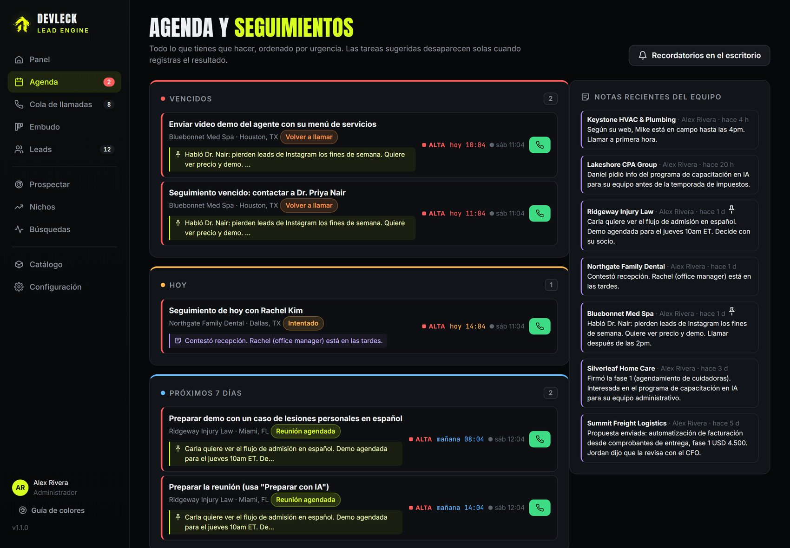
Agenda: vencidos, hoy, próximos 7 días y tareas sin fecha. A la derecha, las notas recientes del equipo.
Vencidos → Hoy → Próximos 7 días → Sin fecha (solo prioridad alta y media).
Cada fila muestra la tarea, el negocio, su etapa, la última nota, la prioridad, la hora y la hora local del negocio.
Hay dos tipos de tareas. Las sugeridas (✨) las crea la herramienta según el estado del lead y desaparecen solas cuando registras lo que pasó; por ejemplo, "Primera llamada a…" se va cuando registras el resultado de la llamada. Las manuales las creas tú en la ficha del lead.
Recordatorios: con la herramienta abierta, aparece un aviso cuando llega la hora de un seguimiento. Si además pulsas "Recordatorios en el escritorio", te llegan aunque estés en otra ventana.
2.3 Cola de llamadas
Para llamar de arriba hacia abajo sin pensar en el orden.
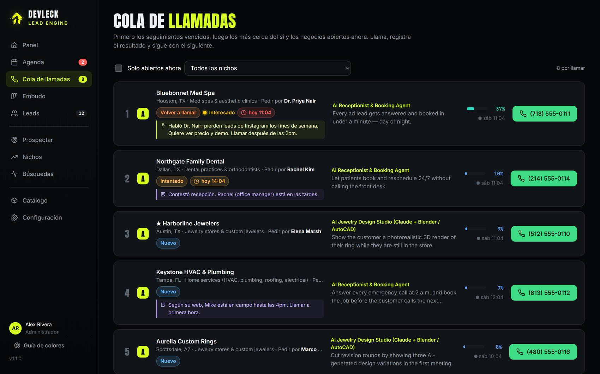
Cola de llamadas: primero los seguimientos vencidos, luego los más cerca del sí y los negocios abiertos ahora.
Cómo ordena
Seguimientos vencidos o de hoy.
Cercanía al sí y calidad del lead.
Negocios abiertos ahora: punto verde = horario laboral en su zona.
Favoritos (★). Bajan los que ya llamaste muchas veces.
Cómo hacer cada llamada
Pulsa el botón verde con el teléfono.
Mientras suena, se abre la ficha en la pestaña Guion.
Al colgar, pulsa Registrar resultado.
Sigue con el siguiente de la lista.
Tip: marca "Solo abiertos ahora" para ver únicamente los negocios que están en horario laboral en este momento.
2.4 La ficha del lead (Resumen)
Se abre al hacer clic en cualquier negocio. Aquí decides el siguiente paso y registras lo que pasó.
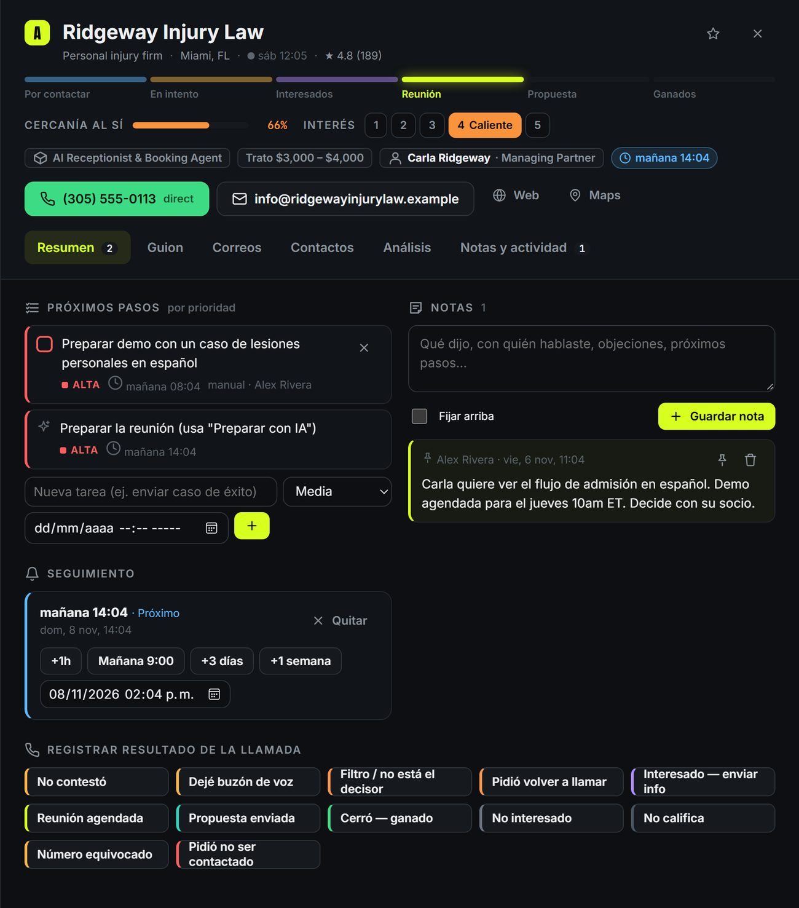
12345678910
Ficha del lead, pestaña Resumen.
Etapa del embudo. Por contactar → En intento → Interesados → Reunión → Propuesta → Ganados. Haz clic en una etapa para mover el lead.
Cercanía al sí (0–100%). Qué tan cerca está de cerrar. Se calcula sola con la etapa, tu nivel de interés y la calidad del lead.
Interés (1–5). Lo asignas tú después de hablar con el decisor: 1 Frío · 2 Tibio · 3 Interesado · 4 Caliente · 5 Listo para cerrar.
Datos clave: qué venderle, trato estimado, a quién pedir (decisor) y el próximo seguimiento con su color de urgencia.
Llamar y escribir: el botón verde llama; el del correo abre tu correo con el mensaje ya escrito.
Próximos pasos: las tareas ordenadas por prioridad (roja = alta, ámbar = media, gris = baja). Las manuales se marcan con la casilla. Abajo puedes agregar una tarea nueva con prioridad y fecha.
Notas: escribe qué pasó. Marca "Fijar arriba" en lo más importante: las notas fijadas aparecen primero en todas las listas.
Seguimiento: programa cuándo volver a contactar con los botones rápidos (+1 h, mañana 9:00, +3 días, +1 semana) o con una fecha exacta.
Registrar resultado: un botón por cada desenlace de la llamada (ver la tabla de abajo).
Qué hace cada resultado
Botón
Mueve a
Qué pasa después
No contestó
Intentado
Sugiere reintentar en 24 h.
Dejé buzón de voz
Intentado
Reintento en 48 h y te lleva a la pestaña Correos para enviar el mensaje.
Filtro / no está el decisor
Volver a llamar
Reintento en 24 h. Anota el nombre del decisor si te lo dieron.
Pidió volver a llamar
Volver a llamar
Te pide la fecha y la hora exactas.
Interesado — enviar info
Interesado
Interés 3 y seguimiento en 3 días; te lleva a Correos.
Reunión agendada
Reunión
Interés 4. Te pide la fecha de la reunión, que queda como seguimiento.
Propuesta enviada
Propuesta
Seguimiento en 3 días.
Cerró — ganado
Ganado
Interés 5. Tarea sugerida: coordinar el inicio y pedir un referido.
No interesado · No califica · Pidió no ser contactado
Cerrado
Sale de la cola y de la agenda. "No contactar" es definitivo.
Al registrar el resultado puedes escribir una nota y ajustar el interés en la misma ventana. Escribe siempre la nota: es lo que te salva cuando vuelves a llamar dos semanas después.
2.5 Guion y correos
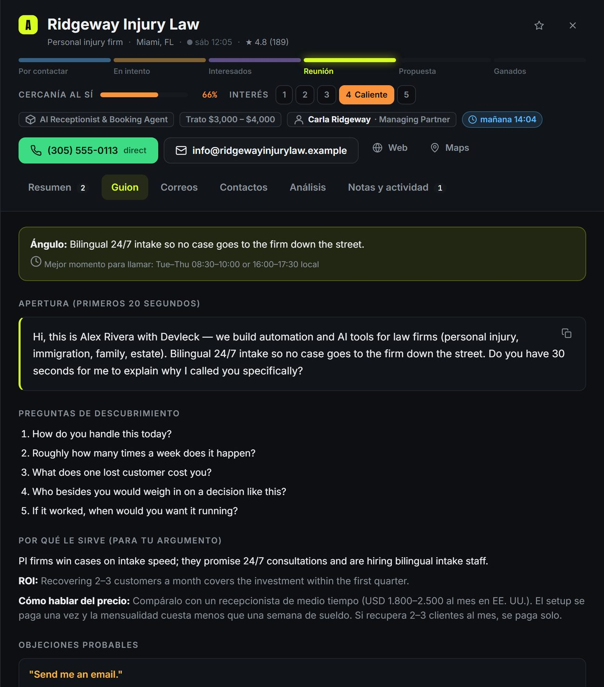
Pestaña Guion.
Pestaña Guion (en inglés, para la llamada)
Ángulo: la idea central para ese negocio y la mejor hora para llamar.
Apertura: los primeros 20 segundos. Léela tal cual las primeras veces.
Preguntas de descubrimiento: para confirmar el problema y quién decide.
Por qué le sirve y ROI: tus argumentos, con evidencia real del negocio.
Cómo hablar del precio y objeciones con su respuesta.
Buzón de voz: el mensaje corto para dejar si no contestan.
Pestaña Correos
Primer correo (para enviar después del buzón de voz) y seguimiento a los 3 días.
"Abrir en correo" abre tu programa de correo con el destinatario, el asunto y el texto listos, y con tu nombre ya puesto.
Si el correo dice "Deducido", no se vio publicado: confírmalo en la llamada antes de enviarlo.
2.6 Contactos y datos manuales
En la llamada muchas veces consigues datos nuevos. Guárdalos aquí:
Agregar persona: nombre, cargo, teléfono directo, correo, LinkedIn y notas sobre esa persona (rol en la decisión, horarios, cómo prefiere que la contacten). Si es el decisor principal, pasa a ser el contacto de la ficha.
Agregar teléfono o correo, indicando de quién es.
Editar datos del negocio: nombre, web, dirección, ciudad, estado, empleados, sedes y redes.
Puedes eliminar datos que estén mal (número equivocado, persona que ya no trabaja ahí).
Lo que agregas a mano queda marcado como "manual" y la IA nunca lo sobrescribe, aunque vuelva a investigar el negocio.
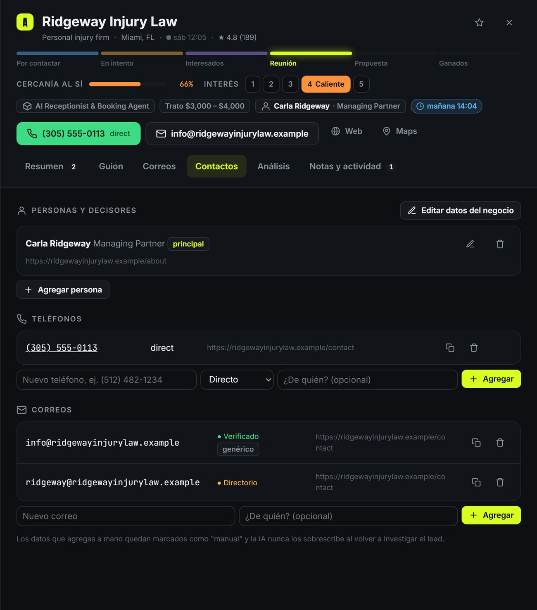
Pestaña Contactos.
2.7 Embudo de ventas
Todas tus oportunidades de un vistazo, ordenadas por cercanía al sí.
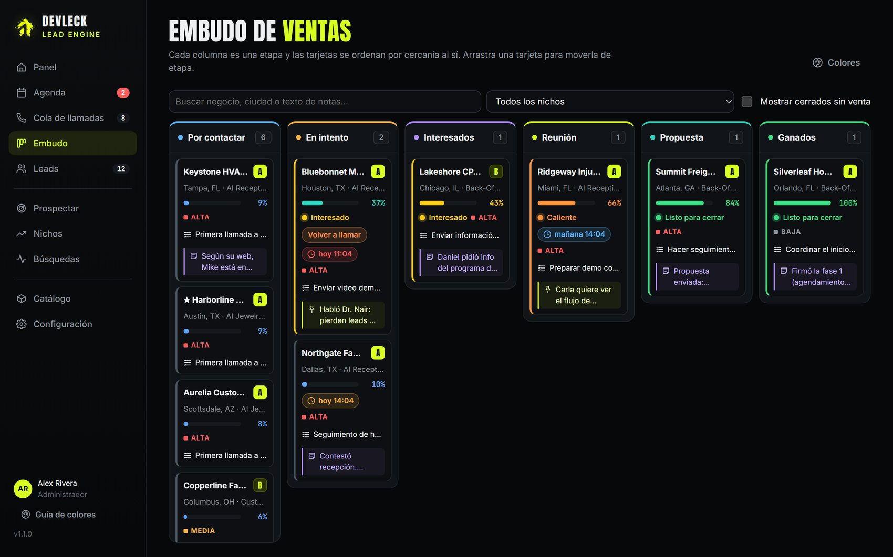
Embudo: una columna por etapa. El borde izquierdo de cada tarjeta tiene el color de su nivel de interés.
Arrastra una tarjeta a otra columna para cambiar su etapa. El interés sube solo al mínimo lógico de esa etapa (por ejemplo, Caliente al pasar a Reunión).
Cada tarjeta muestra la cercanía al sí, el interés, el seguimiento, la tarea más importante y la última nota.
Usa el buscador (también busca dentro de las notas) y el filtro por nicho. Marca "Mostrar cerrados sin venta" para ver perdidos y descartados.
2.8 Leads separados por etapa
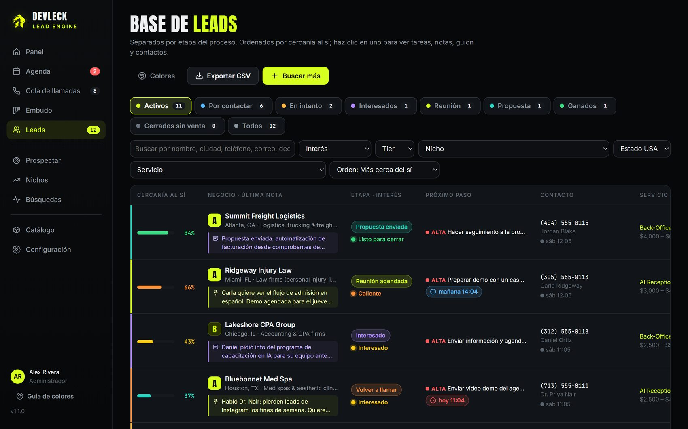
Leads: pestañas por etapa con su conteo, cercanía al sí, última nota y próximo paso.
Las pestañas de colores separan las listas: Activos · Por contactar · En intento · Interesados · Reunión · Propuesta · Ganados · Cerrados sin venta · Todos.
Orden: más cerca del sí (por defecto), próximo seguimiento, calidad, más recientes o nombre.
Filtros: interés, tier, nicho, estado de EE. UU. y servicio. La búsqueda incluye nombre, ciudad, teléfono, correo, decisor y texto de las notas.
Exportar CSV descarga la lista que estás viendo, con etapa, interés, cercanía, último seguimiento y última nota.
2.9 Prospectar: encontrar clientes nuevos
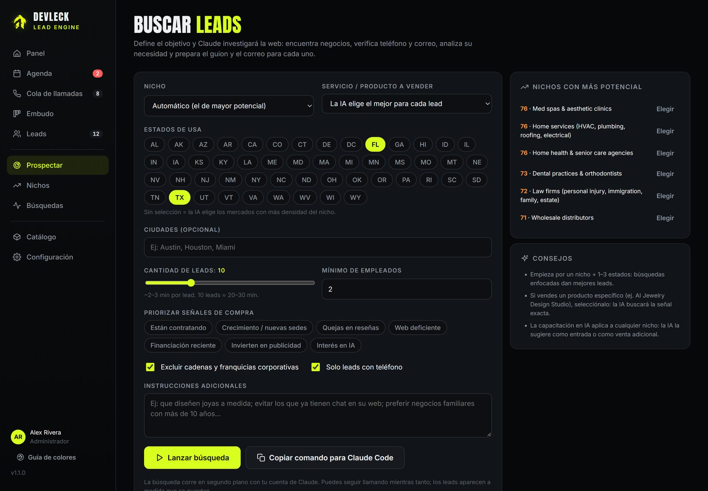
Prospectar: elige el nicho, el servicio a vender, los estados y las señales de compra.
Qué completar
Nicho: la lista muestra el potencial de cada uno (0–100). También puedes escribir uno nuevo.
Servicio o producto: elige uno si vas a vender algo concreto, o deja que la IA elija.
Estados y ciudades (tu territorio sale marcado).
Cantidad: unos 2–3 minutos por lead.
Señales de compra a priorizar e instrucciones adicionales.
Qué hace la IA
Busca negocios en la web, directorios, reseñas y vacantes.
Verifica el teléfono y el correo, con la fuente de cada uno.
Descarta los que no encajan (cadenas, sin necesidad, duplicados).
Escribe qué venderle y por qué, el guion y los correos.
Guarda los leads por lotes: van apareciendo mientras trabaja.
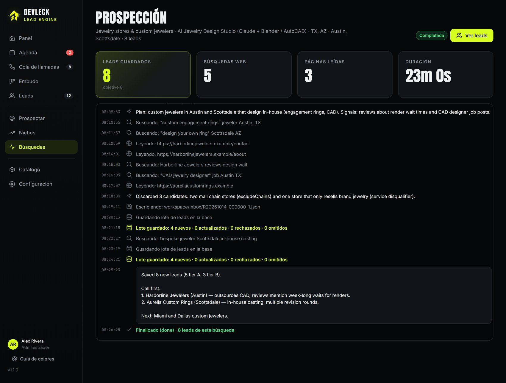
Búsquedas: el progreso en vivo de la investigación (búsquedas, páginas leídas y lotes guardados).
Tip: las búsquedas enfocadas dan mejores leads: un nicho y de 1 a 3 estados. Mientras la IA trabaja puedes seguir llamando.
2.10 Nichos: dónde está la oportunidad
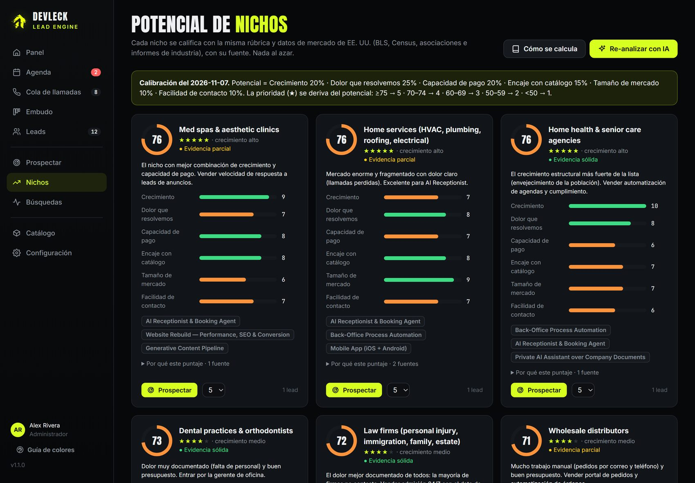
Potencial de nichos: puntaje 0–100 con sus seis dimensiones y fuentes.
Cada nicho se califica con la misma rúbrica y con datos públicos de EE. UU. (BLS, Census, asociaciones del sector):
Dimensión
Peso
Pregunta
Dolor que resolvemos
25%
¿Hay evidencia de un problema que nuestro catálogo resuelve (falta de personal, llamadas perdidas, trabajo manual)?
Crecimiento
20%
¿El mercado crece en EE. UU.?
Capacidad de pago
20%
¿Facturan lo suficiente y tienen buen margen?
Encaje con el catálogo
15%
¿Cuántos de nuestros servicios les sirven, y qué tan directo?
Tamaño de mercado
10%
¿Hay muchos negocios a los que llamar?
Facilidad de contacto
10%
¿Se llega fácil al decisor por teléfono?
Abre "Por qué este puntaje" en cada tarjeta para ver la explicación y las fuentes. Las estrellas (★) indican la prioridad del nicho, y el botón Prospectar abre una búsqueda ya configurada para ese nicho.
2.11 Catálogo y guía de ventas
Aprende cada servicio antes de venderlo. Pulsa "Guía de ventas" en cualquier servicio.
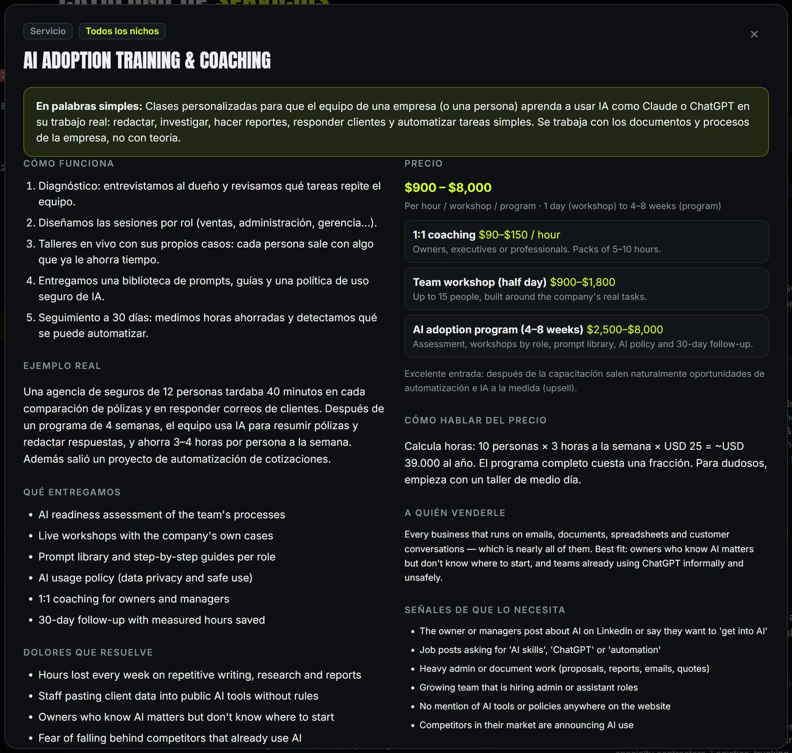
Guía de ventas: qué es, cómo funciona, ejemplo real, precio y paquetes, a quién venderle y señales de compra.
Son precios de referencia para orientar la conversación. El precio final siempre se cotiza después de la llamada de diagnóstico gratuita (precio fijo por fase).
Servicio / producto
Precio de referencia (USD)
AI Receptionist & Booking Agent
$1.500 – 4.000 + $150 – 400/mes
Back-Office Process Automation
$1.500 – 6.000 por automatización
AI Adoption Training & Coaching (todos los nichos)
AI Jewelry Design Studio (Claude + Blender / AutoCAD)
$2.500 – 7.500 + $200 – 450/mes
Private AI Assistant over Company Documents
$3.500 – 14.000 + $150 – 400/mes
Reviews & Customer Sentiment Intelligence
$1.500 – 4.500 + $150 – 350/mes
Generative Content Pipeline
$2.000 – 8.000
Retail AI — Demand Forecasting & Dynamic Pricing
$4.500 – 18.000
Custom Web Platform / Customer Portal
$8.000 – 35.000
Mobile App (iOS + Android)
$7.000 – 28.000
Software Rescue & Hardening
Auditoría $800 – 2.000 · correcciones por fase
2.12 Configuración y actualizaciones
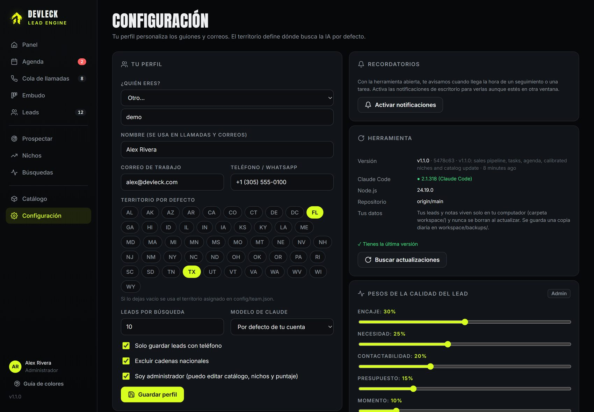
Configuración: perfil, territorio, recordatorios y actualizaciones.
Recordatorios: pulsa "Activar notificaciones" para recibir avisos de escritorio.
Actualizar: cuando te avisemos de una versión nueva, pulsa Buscar actualizaciones → Actualizar ahora, cierra la ventana negra y vuelve a abrir iniciar.bat.
Tus datos están seguros: tus leads y notas viven solo en tu computadora (carpeta workspace) y nunca se borran al actualizar. La herramienta guarda además una copia diaria y otra antes de cada actualización en workspace/backups.
Parte 3
Rutina, colores y ayuda
Cómo organizar tu día, qué significa cada color y qué hacer si algo falla.
3.1 Tu día ideal
1
Abre la Agenda
Atiende primero lo vencido y lo de hoy: son personas que esperan tu llamada.
2
Trabaja la Cola de llamadas
De arriba hacia abajo. Registra el resultado, el interés y una nota en cada llamada.
3
Envía los correos pendientes
A quienes dejaste buzón de voz o pidieron información (pestaña Correos).
4
Revisa el Embudo
Dedica tiempo a los de mayor cercanía al sí: prepara reuniones y haz seguimiento a las propuestas.
5
Lanza una búsqueda nueva
Si tu lista "Por contactar" baja de unos 15 leads, prospecta en el nicho con más potencial.
3.2 Guía de colores
Etapa del embudo
Nuevo — aún sin contactar
Intentado — se llamó sin hablar con nadie
Volver a llamar — pidieron otra llamada
Interesado — conversación positiva
Reunión agendada
Propuesta enviada
Ganado — ya es cliente
Perdido / No califica
No contactar — definitivo
Calidad del lead (tier)
A (≥ 75), B (55–74) y C (< 55): qué tan bueno es el negocio antes de llamarlo. La cercanía al sí, en cambio, mide qué tan avanzada está la venta.
Interés y cercanía al sí (frío → caliente)
1 Frío · cercanía 0–19%
2 Tibio · 20–39%
3 Interesado · 40–59%
4 Caliente · 60–79%
5 Listo para cerrar · 80–100%
Seguimientos y prioridad
Vencido / prioridad alta
Hoy / prioridad media
Próximo (7 días)
Programado / prioridad baja
Nota (violeta)
Nota fijada (lima)
3.3 Si algo falla
Problema
Solución
La búsqueda dice "Failed to authenticate" o "OAuth session expired"
Tu sesión de Claude caducó. En la terminal escribe claude, luego /login, y vuelve a entrar.
"No se encontró Claude Code"
Repite la instalación del paso 1 y reinicia la herramienta. Comprueba con claude --version.
No se abre la página
Entra manualmente a http://localhost:4600. Si el puerto está ocupado, es que la herramienta ya está abierta.
No me llegan los recordatorios
La herramienta debe estar abierta. Activa las notificaciones en Configuración y permite las notificaciones del navegador.
Al actualizar dice "Tienes cambios locales"
Se modificaron archivos de la herramienta. Escríbele a soporte antes de actualizar; tus leads no se tocan.
Salen muy pocos leads
Amplía los estados o ciudades, desmarca "Solo leads con teléfono" o elige un nicho con más potencial.
La búsqueda lleva mucho rato
Es normal: unos 2–3 minutos por lead. Si pasa de 45 minutos, pulsa Detener; los leads ya guardados se conservan.
3.4 Reglas de oro
Confirma los datos en la llamada. Si un correo dice "Deducido", pídelo cuando hables con el negocio.
Si alguien pide no ser contactado, márcalo como "Pidió no ser contactado" y avisa a soporte para bloquearlo para todo el equipo.
Llama manualmente desde tu teléfono: nada de marcadores automáticos ni mensajes pregrabados (ley TCPA de EE. UU.).
Todos los correos llevan un pie para darse de baja (ley CAN-SPAM): no lo borres.
No compartas tus leads con personas fuera del equipo.
Escribe una nota después de cada conversación. Tu "yo" de la próxima semana te lo agradecerá.
¿Necesitas ayuda?Escríbenos con una captura de pantalla del problema.